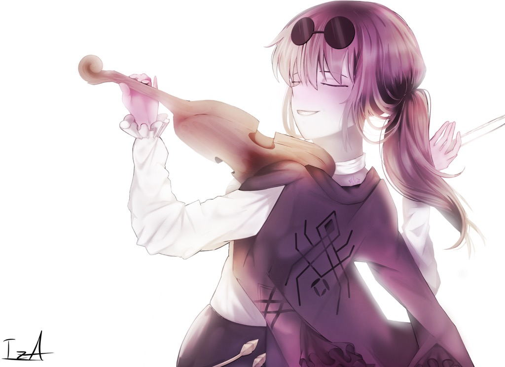
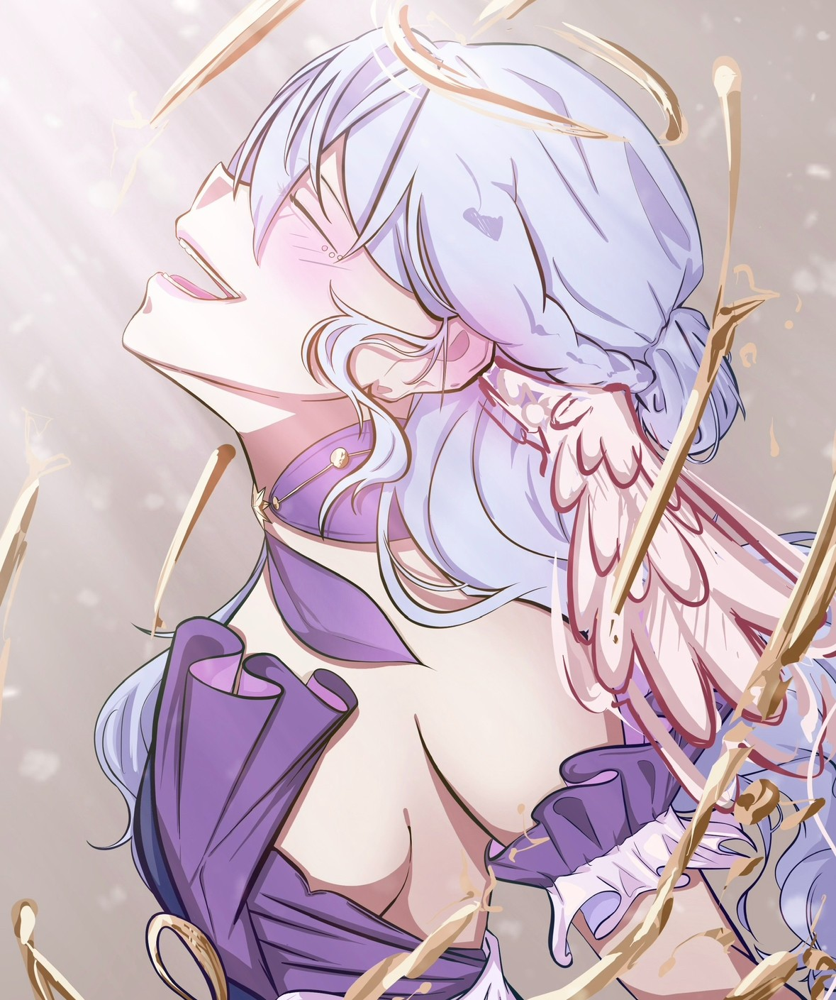
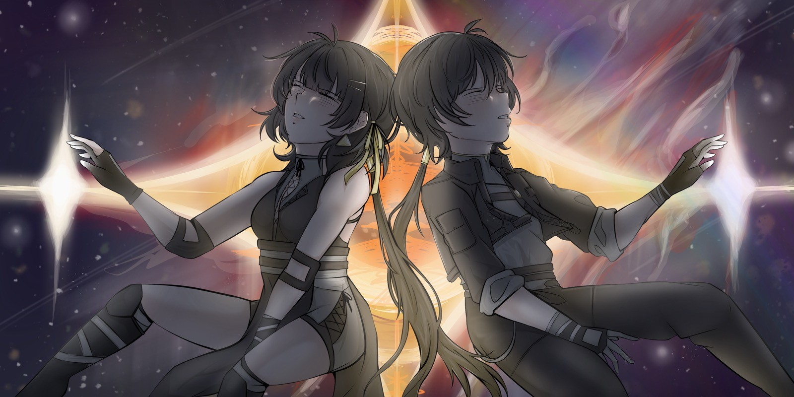
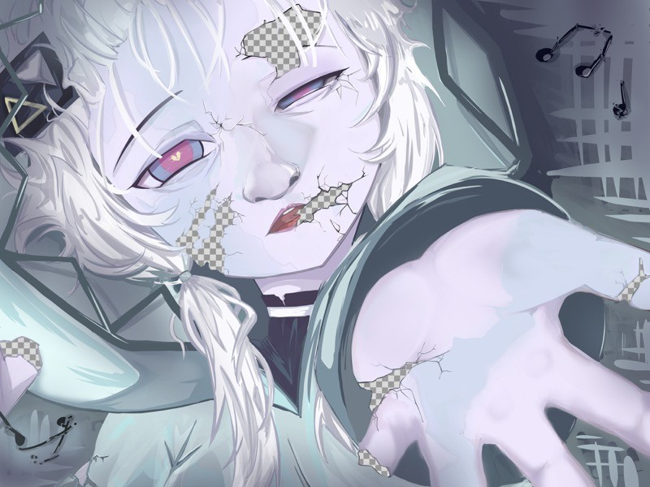

Dramatic Lighting
This piece, I was expirementing with a very loose design. I wanted to see what I could do without lineart or direction, I want to go with the feeling just like the character. This character is from a video game Honkai: Star Rail. This character in particular is named Kafka - she is portrayed as a villian in the story and always has a cool head. She is someone who has everything under control to a point where she is seen playing her violin while everyone is fighting around her. I wanted to draw her for this expirement because I felt this sort of style fits her character well. I was able to show a sense of motion as she's lost in only her playing. The entire background is simply white noise to her, however, it still affects her, as you can see the light blurs her outline.
The most difficult part of this illustration was mostly the perspective. The back view of a character isn't simple and it's difficult to make it look natural. On top of that the Violin created other issues as I had never drawn one before, so starting off by drawing one in that perspective was difficult. I managed these issues by taking it slow, I took a step back and thought about it realistically. I stopped thinking of it like a drawing and thought of it like a person. I was able to really figure out what realistically it should look like and that helped a lot. I also looked up different references, I never found a reference for exactly what I had but I took the reference of similarity and pieced it together by thinking it though.
Manga Life
This is another style I like to mess with. It's a more stylized, manga type of artstyle that is very fun to create with. I was able to have very heavy lines with very thin lines and I could really let my hand take the lead. The character here isn't from a series so she has no real personality to base the drawing off of. I wanted to see how much fun I could have by these types of drawings and so I thought of it more like a break from the norm. A break where I could really let my creativity fly.
The difficult part of this drawing was probably the lines, I tend to use simple lineart in my drawings so when tasked to create something similar to manga, I struggled. I really wasn't sure where to put the lines. Like in the hair, I just added lines like they were highlights. I was studing manga art to figure out the best way to go about it and that was the main similarity I found amoung manga art. It really does feel random were specific lines are placed, however, when you do it for so long, I'm sure it becomes second nature. So, I'll contiue practiing this type of art

Free Bird
This would probably be my most natural artstyle, It's the easiest for me to draw in and it's my go-to. It's more on the anime side and the coloring and affects are a bit simple. That's why I'll always start with this and add on to it later. I can create art of this similar quality in about a day - that's why I say it's my most natural art-style. This drawing in particular features a charcter named Robin from the video game Honkai: Star Rail. Robin is portrayed as a metaphorical caged bird but towards the end of the story she breaks free and becomes who she wants to be. So, in order to create that free sort of feeling I made the big important detail of her wings stand out. I made no lineart for them and instead allowed the wings to take their own shape just like how her character does.
My main issue was also my favorite part of the illustration - the wing. The wing is what's guiding the audiance from the sides of the illustration. There are three focal points - the light, the face, and the wing. It first starts at the wing and then is guiding up to the freeing light. My issue, however, was I didn't feel like I could make the wing stand out against the cage bars and the background. It just wasn't popping like I wanted it to. I was able to fix this by changing the wing's color so it would look different. The original color is more on the blueish white side. Although that just blends into the light blue hair and the light background. My solution, I found was to simply change the color of the wing. With blue hair, and purple clothes, a pinkish red wing would create an analogous color scheme that would not only make the wing pop but also complement the whole illustration.

Fate
This illustration, I focused mainly on the background. Despite the charcters being so prominent, I wanted the background to be the focal point. The two characters are the protagonists from the video game Wuthering Waves. The protagonists are shrouded in mystery and there isn't we know about them ourselves. All we know is the stange space we find ourselves in at the start of the game and that is the direction I took for this piece. I wanted the protagonists to be front-and-center but not feel front-and-center. I did this by focusing solely on the background, I took extra care to ensure it was full of detail and life. While, at the same time, the characters in the foreground are just there, engulfed in the abyss they were born from. Because of this, I kept the shading and overall look of the characters very simple. All of which to create that eerie feeling.
The main struggle was really trying not to complicate it. This piece took me about two weeks of painstakingly painting every little detail. This was one of my larger pieces and it is pretty detailed. In the future, I would love to work out the shadows on the characters more, I don't think they're accurately shaded and so I'd love to look online and learn more about it. But, all in all, this is a good one. Especially since I don't do backgrounds very much, this is improvement.

Change of Heart?
This piece is a bit older than the rest of them, I had done this one in 2023. But, it is still one of my favorites. The character is a voice synthesizer software named Kafu. It allows the user to create a song by forming different sounds together from its voicebank. The thought behind this piece was imagining how voice synthesizers are used everyday with a thought about them. They are given characters however, they are still just a computer software. So, what if there comes a day where the characters are so badly taken care of by us, humans, that they edventually can't sing for us like they used to. Kafu is seen here with cracks and crumbled off pieces of herself only to reveal that there is a trasparent background underneath her, she is nothing without us and we are nothing without her. So, her reaching her hand out, asking if we've had a change of heart and if we have started to care about her now. This is a hearbreaking scene, but still so beautiful how she can't show any signs of hatred because she's still just a computer program. She was made to sing and that's it.
The biggest issue with this piece was the perspective. Even now, it looks a bit off. The parts cut-off from foreshortening seen too cut-off. Like, I don't know where the torso should've been properly laid out. Or where the creases in the outstreached hand's sleave should be. It would probably be a smart idea for me to research these mistakes and redo this drawing to see if I've made any improvemt.